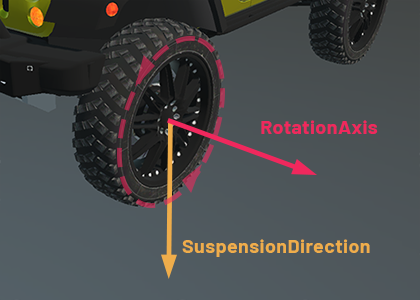
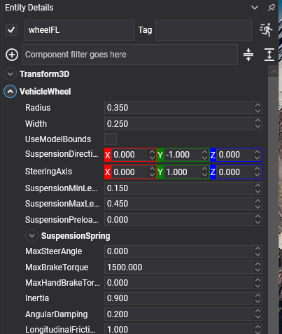

Vehicle Wheel

VehicleWheel is one wheel of a vehicle. It goes on a child entity of the chassis, and the entity's local position is where the wheel is mounted.
A wheel is not a body and has no collider. It is a probe: a ray or a shape cast sent down the suspension direction, looking for the ground, with a spring between what it found and the chassis. That is what makes a vehicle stable at speed where four bolted-on bodies would shake themselves apart.
The controller finds its wheels by walking its descendants, and the order it finds them in is the index its properties refer to.
Wheel Properties

| Property | Default | Description |
|---|---|---|
| Radius | 0.35 | The wheel's radius, in metres. It decides where the chassis rides and how far one turn carries the vehicle. |
| UseModelBounds | false | Reads Radius as a factor of the largest dimension of the model on the wheel entity, scale included, instead of in metres: a radius of 0.5 is a wheel that fits its own mesh. This is the convention the previous PhysicWheel3D used, and what the migration tool sets on migrated wheels; new vehicles are simpler in metres. The result is never smaller than 0.01. |
| Width | 0.25 | Its width. Used by the sphere and cylinder collision testers. |
| MaxSteerAngle | 0 | The furthest this wheel steers, in radians. Zero means it does not steer, which is what a rear wheel wants. |
| SteeringAxis | 0,1,0 | The axis it steers about, in the chassis's space. |
| Inertia | 0.9 | The wheel's rotational inertia. Higher takes longer to spin up and longer to lock under braking. |
| AngularDamping | 0.2 | How quickly a free-spinning wheel slows down. |
| UpdateEntityTransform | true | Whether the controller writes the wheel's pose back onto its entity, so the drawn wheel steers and spins. |
Suspension
| Property | Default | Description |
|---|---|---|
| SuspensionDirection | 0,-1,0 | Which way the suspension travels, in the chassis's space. |
| SuspensionMinLength | 0.15 | Fully compressed. |
| SuspensionMaxLength | 0.45 | Fully extended. The difference between the two is the wheel's travel. |
| SuspensionPreloadLength | 0 | How much the spring is already compressed at rest. |
| SuspensionSpring | 1.5 Hz, damping 0.5 | The spring itself. See Springs. |
The spring's frequency is how many times a second the vehicle wants to bounce, and it is the number to reach for first: around 1 Hz is a soft saloon, 2 Hz is sporty, 3 Hz and above is a racing car. Damping near 0.5 lets it settle in a bounce or two; near 1 it settles dead.
// A stiff, well-damped car: it stays flat in corners and does not float over crests.
wheel.SuspensionSpring = SpringParameters.FromFrequency(2.4f, 0.7f);
wheel.SuspensionMinLength = 0.1f;
wheel.SuspensionMaxLength = 0.3f;
Braking
| Property | Default | Description |
|---|---|---|
| MaxBrakeTorque | 1500 | The strongest braking torque this wheel can apply, in newton-metres. |
| MaxHandBrakeTorque | 0 | The same for the hand brake. Zero on the front wheels and high on the rear is what makes a hand brake turn the car. |
Grip
| Property | Default | Description |
|---|---|---|
| LongitudinalFrictionScale | 1 | Scales grip along the wheel's rolling direction: acceleration and braking. |
| LateralFrictionScale | 1 | Scales grip sideways: cornering. |
These two are the handling dials. More lateral grip at the rear than the front gives understeer, where the car pushes wide. More at the front gives oversteer, where the back steps out.
Note
On a wheeled vehicle the two scales reshape the tyre's friction curves, grip against slip. On a tracked one a track's grip is a single number rather than a curve, so the same two properties just multiply it. Either way, 1 leaves the simulation's own model untouched.
Telemetry
Read-only, and updated every step. Everything a HUD, a tyre-smoke effect or a suspension animation needs:
| Property | Description |
|---|---|
| HasContact | Whether the wheel is touching anything. |
| SuspensionLength | How far the suspension is currently extended. |
| SteerAngle | The angle it is currently steered to. |
| AngularVelocity | How fast it is spinning. |
| ContactNormal | The normal of the surface under it. |
| ContactPosition | Where it touches. |
| LongitudinalSlip | How much it is spinning up or locking, from 0 to 1. |
| LateralSlip | How much it is sliding sideways. |
| CombinedLongitudinalFriction | The grip actually available along the rolling direction. |
| CombinedLateralFriction | And sideways. |
| BrakeImpulse | The braking impulse applied last step. |
| Index | This wheel's index on its controller, or -1 if it has not been assigned. |
Note
The five tyre values (the two slips and the two frictions, plus BrakeImpulse) are only meaningful on a wheeled vehicle. On a tracked one they read zero, because a track's grip is not modelled per wheel.
public class TyreSmoke : Behavior
{
[BindComponent]
private VehicleWheel wheel = null;
protected override void Update(TimeSpan gameTime)
{
// Slip, not speed: a wheel spinning up on the spot and a wheel sliding sideways in a corner
// both smoke, and neither of them is about how fast the car is going.
float slip = Math.Max(Math.Abs(this.wheel.LongitudinalSlip), Math.Abs(this.wheel.LateralSlip));
this.emitter.IsEnabled = this.wheel.HasContact && slip > 0.35f;
this.emitter.Position = this.wheel.ContactPosition;
}
}
Tip
Leave UpdateEntityTransform on and make the wheel's visual a child of the wheel entity, not the wheel entity itself. The controller owns that entity's pose, so any rotation authored on it, laying a CylinderMesh on its side for instance, is overwritten every step. The one thing the wheel does keep is the local orientation it had when it started: that is treated as a visual offset and combined with the steering and the spin, which is what lets a mirrored wheel model on the left side of the car keep facing the right way.